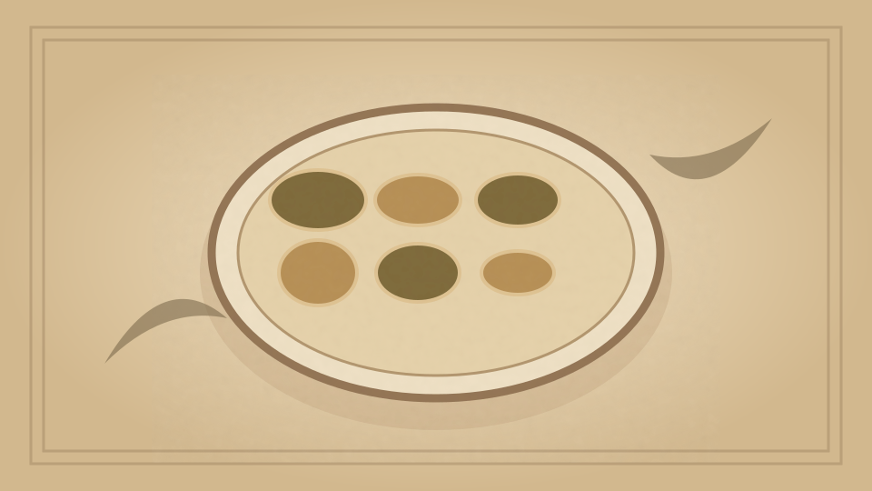

1910 · Fannie Merritt Farmer · FISH
I. Bivalve Mollusks
The Boston Cooking-School Cook Book

Historical Recipe
The following text is extracted from the 1910 edition, retaining historical terminology and quantities.
Original Ingredients & Directions
Oysters are mollusks, having two shells. The shells are on the right and left side of the oyster, and are called right and left valves. The one upon which the oyster rests grows faster, becomes deeper, and is known as the left valve. The valves are fastened by a ligament, which, on account of its elasticity, admits of opening and closing of the shells. The oyster contains a tough muscle, by which it is attached to the shell; the body is made up largely of the liver (which contains glycogen , animal starch), and is partially surrounded by fluted layers, which are the gills. Natural oyster beds (or banks) are found in shallow salt water having stony bottom, along the entire Atlantic Coast. The oyster industry of the world is chiefly in the United States and France, and on account of its increase many artificial beds have been prepared for oyster culture. Oysters are five years old before suitable for eating. Blue Points, which are small, plump oysters, take their name from Blue Point, Long Island, from which place they originally came. Their popularity grew so rapidly that the supply became inadequate for the demand, and any small, plump oysters were soon sold for Blue Points. During the oyster season they form the first course of a dinner, served raw on the half shell. In our markets, selected oysters (which are extremely large and used for broiling) Providence River, and Norfolk oysters are familiarly known, and, taken out of the shells, are sold by the quart. Farther south, they are sold by count.
Oysters are obtainable all the year, but are in season from September to May. During the summer mouths they are flabby and of poor flavor, although when fresh they are perfectly wholesome. Mussels , eaten in England and other parts of Europe, are similar to oysters, though of inferior 156 quality. Oysters are nutritious and of easy digestibility, especially when eaten raw.
To Open Oysters. Put a thin flat knife under the back end of the right valve, and push forward until it cuts the strong muscle which holds the shells together. As soon as this is done, the right valve may be raised and separated from the left.
To Clean Oysters. Put oysters in a strainer placed over a bowl. Pour over oysters cold water, allowing one-half cup water to each quart oysters. Carefully pick over oysters, taking each one separately in the fingers, to remove any particles of shell which adhere to tough muscle.
Clams , among bivalve mollusks, rank in value next to oysters. They are found just below the surface of sand and mud, above low-water mark, and are easily dug with shovel or rake. Clams have hard or soft shells. Soft-shell clams are dear to the New Englander. From New York to Florida are found hard-shelled clams (quahaugs). Small quahaugs are called Little Neck Clams and take the place of Blue Points at dinner, when Blue Points are out of season.
Scallops are bivalve mollusks, the best being found in Long Island Sound and Narragansett Bay. The central muscle forms the edible portion, and is the only part sent to market. Scallops are in season from October first to April first.
Automatically extracted transcription; editorial verification pending. Historical instructions may not meet modern food-safety standards.